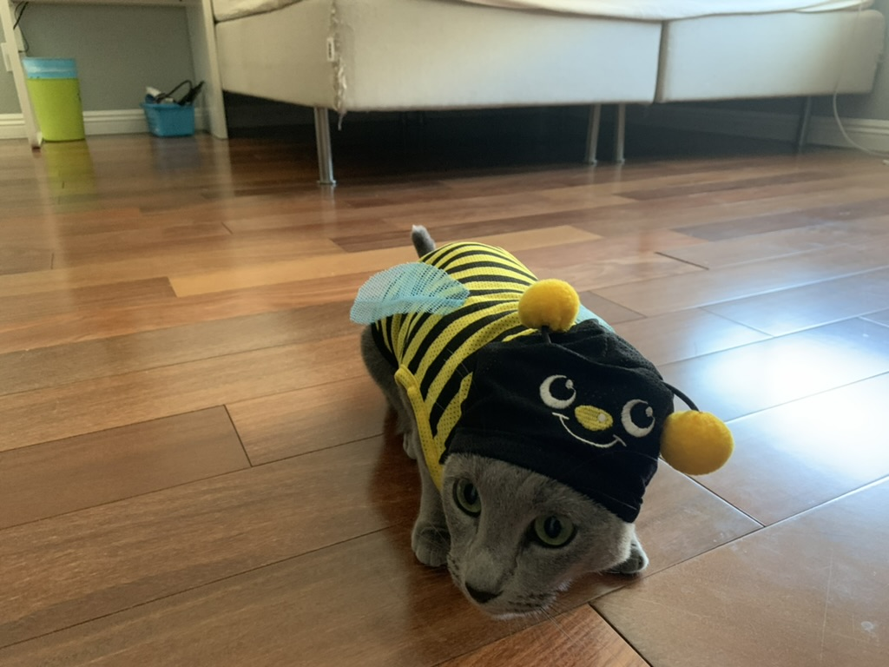
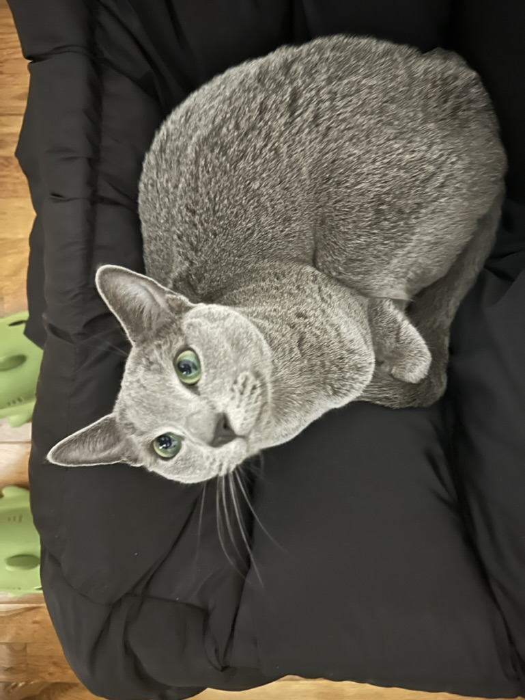

| Favorite toy | Favorite Food | Favorite Activity |
|---|---|---|
| Bird Wand | Pumpking and Tuna | Rolling Around the Floor |
Some of my favorite things in life to do are sleep, travel, laying in Alex's new laundry, and also opening all the cupboards and closets that are in the house. Alex tried buying child locks to shut them but I still some how figured out a way to open all of them. I also really fly to California sometimes when I want to see the other two cats Pumpkin and Carrot. I'm super excited to see them this Christmas as it has almost been a year since I last saw them. I also taught myself how to use the toilet, and my owner was shocked when he was brushing his teeth and looked behind and saw me sitting on the toilet like a human being. Also, playing fetch in the late hours of the night is also a favorite thing of mine, bringing cable ties into Alex's bed for him to wake up to.
Signatures: 0
